低成本便携式 PIV 粒子图像测速演示装置Low-cost Portable PIV Flow-velocimetry Demonstrator
设计并制作一台低成本、便携、可交互的 PIV 演示装置：用激光片光照亮流道中的示踪粒子、CMOS 相机采集、软件计算并实时可视化速度场，把原本昂贵复杂的 PIV 原理做成低年级学生也能上手的教学设备。我负责整机机械系统。Designed and built a low-cost, portable, interactive PIV demonstrator: a laser light-sheet illuminates tracer particles in a channel, a CMOS camera captures them, and software computes and visualizes the velocity field in real time—turning expensive, complex PIV into a teaching device for junior students. I owned the whole mechanical system.
项目背景Background
PIV（粒子图像测速）是实验流体力学测速的主流方法，但专业设备复杂、昂贵、对环境要求高，低年级学生难以理解其原理。团队目标是做一台低成本、易维护、便携且带交互功能的装置，直观演示 PIV 工作原理。PIV is a mainstream method in experimental fluid mechanics, but professional rigs are complex, expensive and environment-sensitive, making the principle hard for junior students to grasp. The team's goal: a low-cost, low-maintenance, portable, interactive device that demonstrates PIV intuitively.
系统组成（多子系统集成）System (multi-subsystem integration)
- 流道子系统：鼓风机驱动空气循环并携带示踪粒子，含调速装置与滤网。Flow subsystem: a blower circulates air carrying tracer particles, with speed control and a filter mesh.
- 照明子系统：激光经柱面镜整形成二维片光，照亮流场使粒子散射成像。Illumination: a laser is shaped by a cylindrical lens into a 2D light-sheet that lights the flow so particles scatter light for imaging.
- 图像采集：CMOS 相机在两个时刻多重曝光采集粒子位置。Image capture: a CMOS camera multi-exposes particle positions at two instants.
- 交互 GUI：树莓派 + 7 吋触摸屏，实时显示粒子图像、速度矢量与流量。Interactive GUI: Raspberry Pi + 7" touchscreen showing particle images, velocity vectors and flow rate in real time.
我的具体工作（负责机械系统）What I Did (mechanical system)
- 整机结构设计：设计铝型材支架作为装置主体框架，承载激光、相机、流道、屏幕等子系统并保证相对位置精度与可调性。Structure: designed the aluminum-profile frame carrying the laser, camera, channel and screen, ensuring relative-position accuracy and adjustability.
- 外壳与布局：设计木箱外壳集成走线与防护；协调各子系统在有限空间内的安装与光机对位（相机视场对准激光片光照亮的流道截面）。Housing & layout: designed a wooden enclosure for wiring and protection; coordinated subsystem placement and the opto-mechanical alignment (camera field aligned to the laser-lit channel section).
- 测试：采集沙、水、泡沫球等不同介质中的粒子运动序列并生成轨迹 / 速度成图。Testing: captured particle-motion sequences in sand, water and foam balls, and produced trajectory / velocity plots.
指标与成果Targets & Results
- 高层指标：速度幅值误差 < 20%、方向偏差 < 20°（对比专业 PIV 结果）。High-level targets: velocity magnitude error < 20% and direction error < 20° vs. professional PIV.
- 完成从需求 → 多子系统设计 → 物理搭建 → 测试验证 → 设计文档 / 答辩的完整 Senior Design 闭环。Completed the full Senior-Design loop: requirements → multi-subsystem design → build → verification → documentation / defense.
- 集成机械、光学、成像、嵌入式四类子系统于一台便携低成本装置，实现实时速度场可视化。Integrated mechanical, optical, imaging and embedded subsystems into one portable, low-cost device with real-time velocity-field visualization.
实物演示视频Demo Video
毕业设计 PIV 装置的实物演示（团队答辩录像节选，含透明亚克力流道装置）。Real-device demo of the PIV setup (excerpt from the team defense video, showing the transparent acrylic channel device).
原理、装置与实拍Principle, Device & Photos
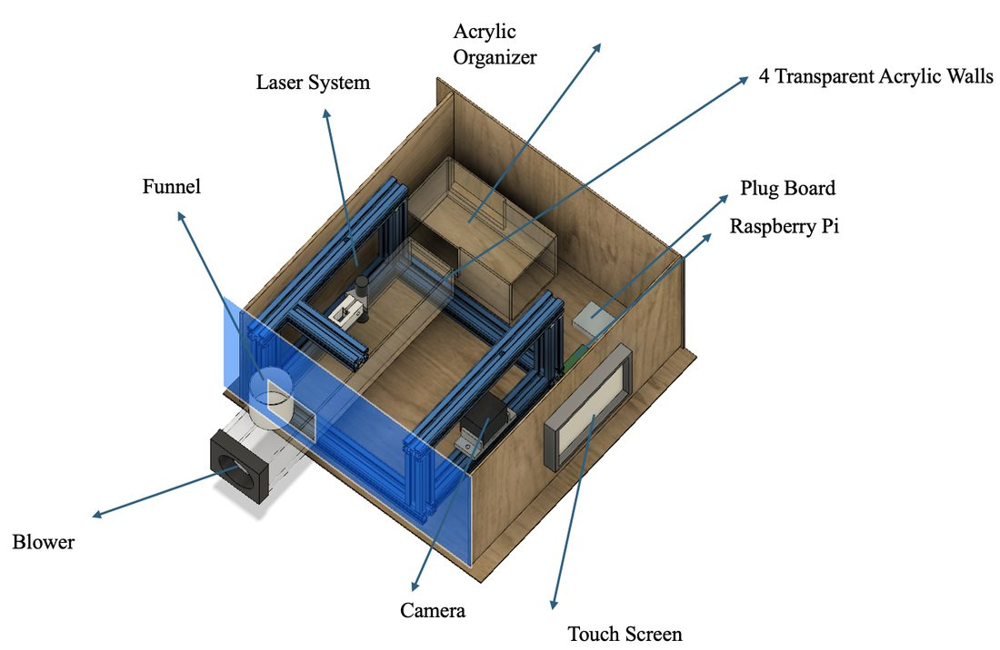
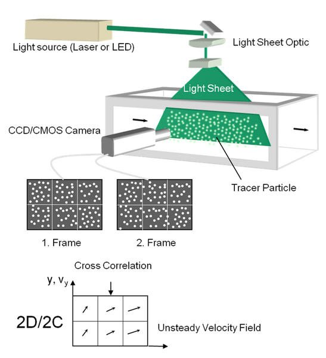
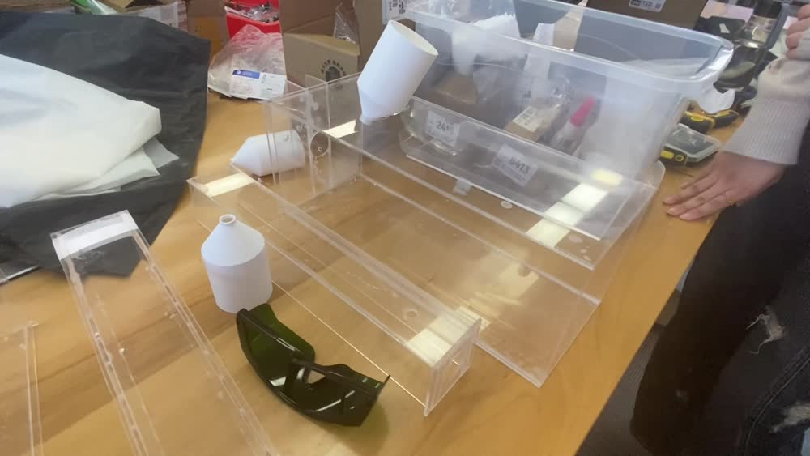
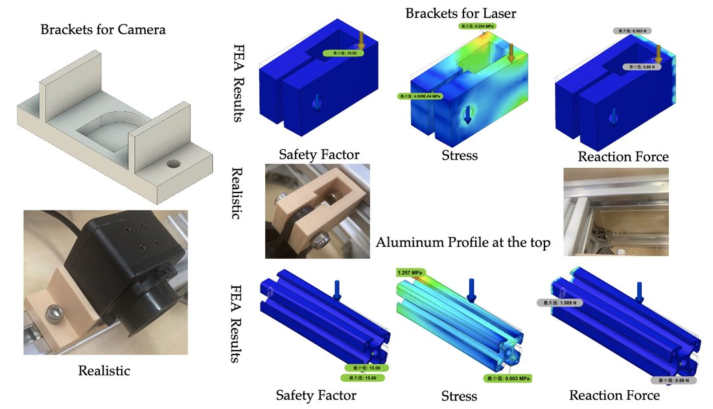
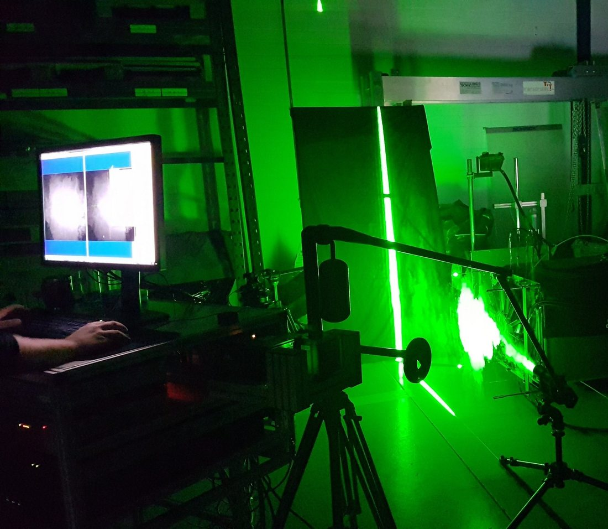
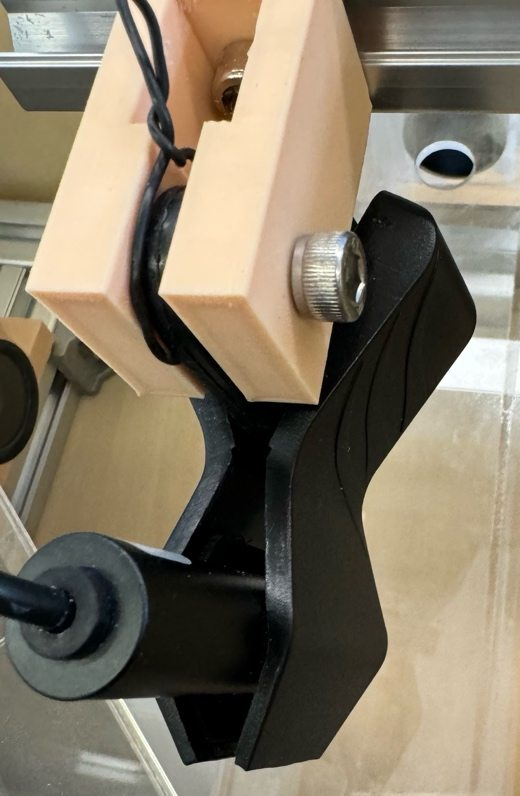
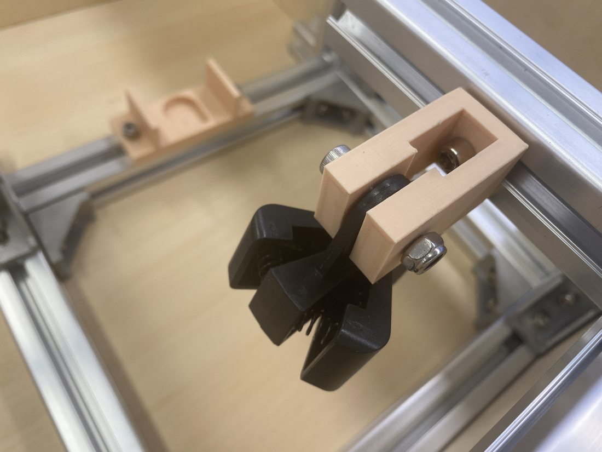
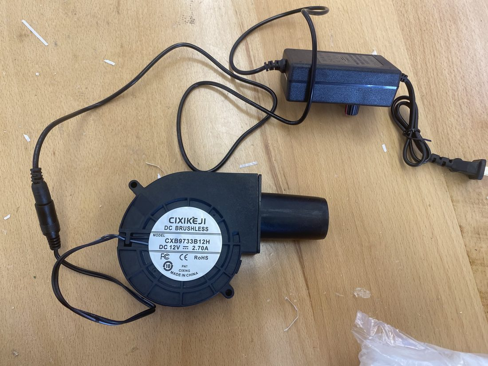
测速结果成图（多介质）Velocimetry Results (multiple media)
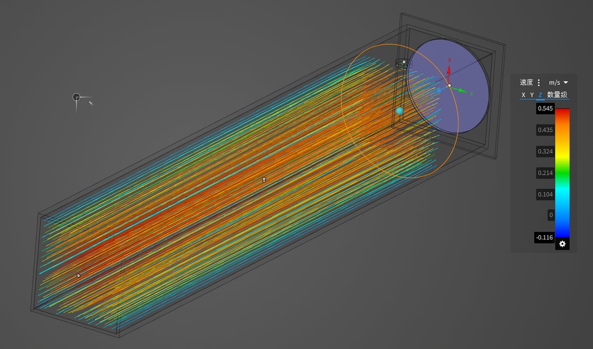
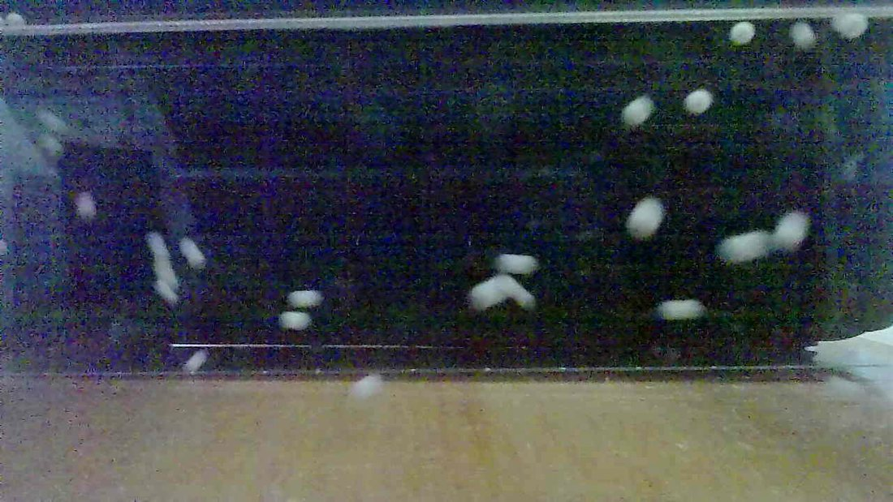
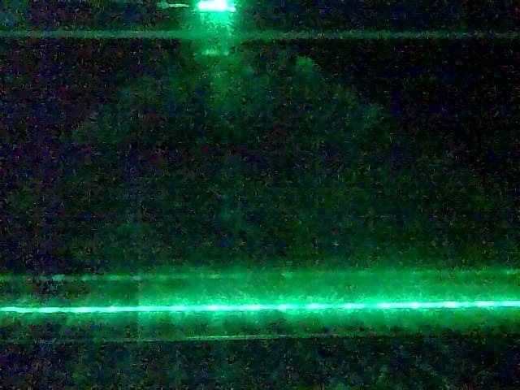
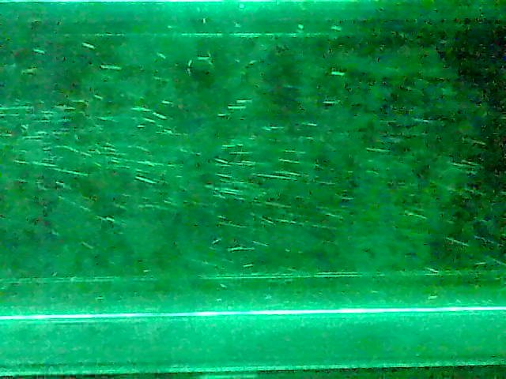
点击图片可查看大图。Click an image to view full size.